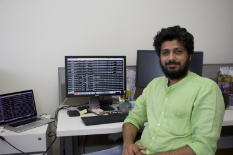

> whoami
Vinu Manikandan
|
I turn raw sequencing data into biological insight — building reproducible genomics pipelines for whole genomes, population studies and single cells at NYU Abu Dhabi.

About
I'm a results-driven Bioinformatics Research Associate at the Public Health Research Center, NYU Abu Dhabi, with over 18 years delivering end-to-end genomic data solutions across academia and industry.
My work spans whole genome sequencing, RNA-seq, genome-wide association studies, single-cell transcriptomics and NGS workflows. I've led QC and analysis of 10,000+ samples for the UAE Healthy Future Study, built GWAS and rare-variant pipelines in Snakemake, and shipped R Shiny apps that make data accessible to the people who need it.
I care about reproducibility, scalable HPC workflows, and helping teams grow — I regularly train students and staff in pipelines, tools and R. I also hold an MBA in Business Analytics, with a focus on machine learning and AI — bridging genomics with data-driven decision making.
current_focus.yml
study: UAE Healthy Future Study
scale: 10K genotypes · 1K WGS
methods:
- GWAS & population structure
- rare-variant (Burden/SKAT/SKAT-O)
- ML on RNA-seq data
stack: [Python, R, Snakemake, SLURM]
degree: MBA · Business Analytics ✓Core competencies
Whole Genome & Exome
Variant calling, annotation and population genomics with GATK, bcftools and ANNOVAR.
GWAS & QTL
Genome-wide association, eQTL, miR-eQTL and meQTL mapping with PLINK and MatrixQTL.
Single-cell
scRNA-seq and scATAC-seq analysis with Seurat, Signac and Demuxlet.
RNA-seq
Bulk transcriptomics from alignment (STAR, HISAT2) to differential expression (DESeq2).
Methylation
Infinium EPIC array methylation analysis of immune-cell epigenetics.
Meta-omics
Metagenome & metatranscriptome analysis, de novo genome and transcriptome assembly.
Population Genomics
Admixture, fine-scale structure and nucleotide diversity vs 1000 Genomes & HGDP.
NGS QC
Demultiplexing and quality analysis for Illumina HiSeq & MiSeq runs.
Technical skills
Experience
Publications
Training courses
Hands-on workshop material I use to train students and staff — now interactive, with exercises, quick checks and R code you can run right in the browser.
Basic Linux for Bioinformatics
Files, permissions, compression, grep, sed and awk, and working on remote servers — the command line every analysis starts with.
Start course RR Basics
R and RStudio from scratch: data types, vectors, data frames, importing data and your first plots.
Start course ggR Visualization
Publication-quality figures with base R and ggplot2: scatter, box, violin and density plots, facets, heatmaps and PCA.
Start courseTalks, workshops & conferences
Education & certifications
MBA in Business Analytics
O.P. Jindal Global University, India
Coursework: Machine Learning, Artificial Intelligence, Data Science
M.Sc. in Bioinformatics
Amrita Vishwa Vidyapeetham, India
Thesis: ExDom — an integrated database for comparative analysis of exon–intron structures of protein domains in eukaryotes (published in Nucleic Acids Research).
B.Sc. in Biotechnology
Bharathiar University, India
Certifications & training
Let's work together
Open to collaborations in population genomics, multi-omics and ML for health data — and always happy to talk pipelines.